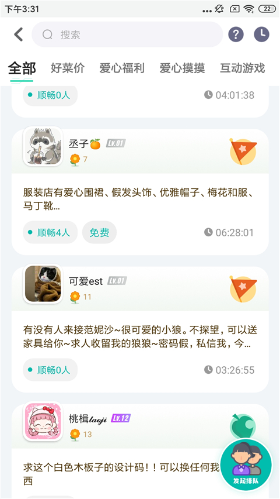

我装了 DoDo 一周，终于看懂了为什么动森玩家都往这扎堆
一个本来只是想找个语音开黑房间的路人，被 DoDo 的超级群和群应用体系种草——这不是另一个聊天软件，是把"游戏社群"四个字做到极致的工具。
说实话我之前对 DoDo 没什么概念。只听过说动森玩家在DoDo官网上扎堆，具体是什么样也不清楚。上周手头的一个小群因为几百号人开始拆一二三四群，通知发三遍都能漏，我抱着"能不能把人塞进同一个地方"的心态去下载装了一个。
结果装完第一天，我就知道我之前想的完全不对。
第一眼：这不是个聊天软件
界面打开的瞬间我愣了一下。不是那种左滑右滑切聊天窗的布局，而是一整个频道列表——文字频道、语音频道、还有一堆图标挂在那，叫"群应用"。后来才弄明白，这玩意儿的核心概念叫"超级群"，人数无上限，一个群就是一整个社区。
我加的第一个群是动森的森友圈。之前听说它是标杆社群，进去才知道有多大——官方口径 40 万+ 成员，我手机上群详情页刷新的时候数字还在跳。换别的聊天软件，这得拆成多少个群才能装得下。
进群之后最先注意到的不是聊天消息，是导航目录和群公告。置顶帖把整个群的结构写得明明白白——交流区、造景分享、语音房、还有好几个图标叫"菜市场"、"图鉴"、"Switch 云相册"。我当时还以为这是某个游戏内置的功能，点进去才发现是群自带的。
用了三天，最打动我的两个细节
菜市场排队这件事真的被它解决了
动森玩家都懂，大头菜买卖是要排队上岛的。之前的做法是群主开一个接龙或者在频道里按顺序喊人，上岛的人不回来下一个就等着——一场交易下来能耗半小时。
DoDo 的"菜市场"群应用直接把这件事工具化了。我没赶上高价那波，但进去看了一眼界面：有实时价格显示、排队列表、上岛状态，岛主还能一键锁岛防止插队。据说这是官方自己都夸"好评如潮"的功能，不是没道理——原来靠人盯的活儿，现在工具替你干了。

频道结构真的能让大群不混乱
我加过不少几百人的群，最大的问题就是信息噪音：求带、水聊、攻略分享、组队开黑全混在一个聊天框里，想找点什么得往前翻半小时。
DoDo 把这些东西拆成了独立频道。想聊天去文字频道，想听人说话进语音频道，想看攻略去帖子区，找功能直接点群应用图标。每个频道各管各的事，聊图鉴的不会被组队开黑的消息淹没，想安静查攻略也不用屏蔽整个群。说实话我之前觉得这不算什么新鲜事，但用了之后才发现，一个几十万人大群真的能不靠灌水维持秩序，频道拆分功不可没。
也说几个我觉得别扭的地方
第一个是新人上手成本。第一次进超级群的人很容易懵——这么多频道、这么多图标、每个还都有自己的规则，光看导航目录都得翻好几分钟。我刚进森友圈的时候在"群应用"那块盯了十分钟，不知道哪个是干什么的。当然这也是大群的通病，组织得越好，对新人来说门槛就越高。
第二个是群应用的发现路径不那么直观。我知道有这个体系是因为看了dodo文档，普通用户进群之后能不能一眼看到入口，取决于群主怎么规划频道结构。好的社群会把应用图标放在显眼位置，但也见过有的群把它们塞在最底下，新人们根本注意不到。
总结：适合谁，不适合谁
如果你是找组织的游戏玩家——尤其是动森、原神、宝可梦这类有成熟玩家圈子的——DoDo 值得装。语音开黑免费、低延迟，超级群体系让你不用在一堆小群里来回切，群应用更是把游戏里那些麻烦事直接做成了工具。
如果你是手里管着好几个小群的群主，那更值得试试。几百人拆成一群二群三群的日子到头了，一个超级群就能装下，频道、权限、管理工具全都给你。
但如果你只是想找个简单的聊天软件，或者你玩的游戏圈子比较小，那它可能有点重。频道结构、群应用、角色权限这些东西，小群用不上那么多，反而会显得复杂。
现在我已经把那个拆了四群的小圈子挪过来了。几十号人在一个群里，频道分开管，通知也不用发三遍。说实话这个产品让我有点意外——我以为又是一个什么都想做一点的聊天软件，结果发现它是真的在想"游戏社群"这四个字怎么落地。
资料在几个仓库都有备份，国内访问不方便的时候能换着看：GitHub、Gitee、GitCode 各一份，查的时候哪个顺手用哪个。